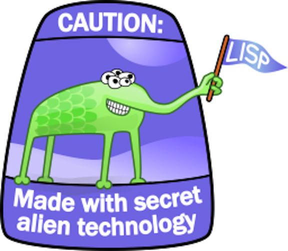

Bootstrapping a Language
Table of Contents
- 1 Bootstrapping A Language
- 2 Once upon a time there was a REPL
- 3 But that REPL didn't do much
- 4 This is the true story… of several lines of code… picked to live in a REPL… to work together and have their lines executed… find out what happens when code stops being polite… and starts getting real…
- 5 Everyone should try to write a language
- 6 :slide:
- 7 Peter Norvig
- 8 The basics
- 9 Let's start turning our REPL into a real language
- 10 Turning the lisp source into tokens (Read)
- 11 What it looks like
- 12 Basic Evaluation
- 13 Did we take a step back?
- 14 We need a way to keep track of things so we can refer to them later
- 15 Update eval to accept an env and repl to initialize an env
- 16 Give it a try
- 17 But our language still doesn't really know how to do anything…
- 18 Define the basic primitives
- 19 Now we're cooking
- 20 Bootstrapping more basic functions
- 21 Try it out
- 22 We're almost there! Let's round things out
- 23 Take in your new awesomeness
- 24 We now have the basics of a language
- 25 But we are missing a lot
- 26 In case Lisp isn't your thing…
- 27 Let's look at another toy language
- 28 LLVM
- 29 ???
- 30 Tokenization
- 31 …
- 32 AST
- 33 …
- 34 …
- 35 Parsing
- 36 Codegen
- 37 Handlers
- 38 Interactive shell
- 39 Putting it all together
- 40 Giving it a spin
- 41 …
- 42 THIS IS FUN!
- 43 You can learn a so much by doing this!
- 44 You will think more about how your programming language does this!
- 45 You might even explore the implementation of your language to see how it works!
- 46 References
1 Bootstrapping A Language title
2 Once upon a time there was a REPL
#!/usr/bin/env ruby def repl while true "geeklisp> ".display p(gets) end end repl
3 But that REPL didn't do much
$ ./geeklisp
geeklisp> (define foo 2) (define foo 2) geeklisp> (define bar 5) (define bar 5) geeklisp> (+ foo bar) (+ foo bar) geeklisp>
4 This is the true story… of several lines of code… picked to live in a REPL… to work together and have their lines executed… find out what happens when code stops being polite… and starts getting real…
5 Everyone should try to write a language
6

7 Peter Norvig

8 The basics
| Form | Syntax | Example |
|---|---|---|
| variable reference | var | x |
| constant literal | number | 12 |
| quotation | (quote exp) | (quote (1 2 3)) |
| conditional | (if test conseq alt) | (if (< 10 20) #t #f) |
| assignment | (set! var exp) | (set! x (* x x)) |
| definition | (define var exp) | (define r 3) |
| procedure | (lambda (var...) exp) | (lambda (r) (* r r))) |
| sequencing | (begin exp) | (begin (set! x 1) (* x 2)) |
| procedure call | (proc exp) | (square 12) |
9 Let's start turning our REPL into a real language
10 Turning the lisp source into tokens (Read)
def to_atom(src) return "[" if src =='(' return "]" if src ==')' return src if src =~ /^-?\d+$/ || src =~ /^-?\d*\.\d+$/ ':' + src end def read(src) tokens = src.gsub('(', ' ( ').gsub(')', ' ) ').split Kernel.eval(tokens.map{|s| to_atom(s)}.join(' ').gsub(' ]',']').gsub(/([^\[]) /,'\1, ')) end def repl while true "geeklisp> ".display p(read(gets)) end end
11 What it looks like
$ ./geeklisp geeklisp> (+ 2 3) [:+, 2, 3] geeklisp> (define sqr (lambda (x) (* x x))) [:define, :sqr, [:lambda, [:x], [:*, :x, :x]]] geeklisp> sqr :sqr geeklisp> (sqr 2) [:sqr, 2]
12 Basic Evaluation
def eval(x) return x if !x.is_a? Array case x[0] when :quote then x[1..-1] end end def repl while true "geeklisp> ".display p(eval(read(gets))) end end
13 Did we take a step back?
$ ./geeklisp geeklisp> (+ 2 3) nil geeklisp> (define sqr (lambda (x) (* x x))) nil geeklisp> (sqr 4) nil geeklisp> (quote (1 2 3 4)) [[1, 2, 3, 4]]
14 We need a way to keep track of things so we can refer to them later
class Env < Hash def initialize(keys=[], vals=[], outer=nil) @outer = outer keys.zip(vals).each{|p| store(*p)} end def [] (name) super(name) || @outer[name] end def set(name, value) key?(name) ? store(name, value) : @outer.set(name, value) end end
15 Update eval to accept an env and repl to initialize an env
def eval(x, env) return env[x] if x.is_a? Symbol return x if !x.is_a? Array case x[0] when :quote then x[1..-1] when :define then env[x[1]] = eval(x[2], env) when :set! then env.set(x[1], eval(x[2], env)) when :env then env end end def repl env = Env.new while true "geeklisp> ".display p(eval(read(gets), env)) end end
16 Give it a try
./geeklisp geeklisp> (define foo 5) 5 geeklisp> (define sqr (lambda (x) (* x x))) nil geeklisp> (define bar 27) 27 geeklisp> foo 5 geeklisp> bar 27 geeklisp> (define baz (quote (1 2 3))) [[1, 2, 3]] geeklisp> (env) {:foo=>5, :sqr=>nil, :bar=>27, :baz=>[[1, 2, 3]]}
17 But our language still doesn't really know how to do anything…
$ ./geeklisp geeklisp> (+ 2 3) nil geeklisp> (car (1 2 3)) nil geeklisp> (cdr (1 2 3)) nil geeklisp> (+ (* 3 4) 5) nil
18 Define the basic primitives
def init(env) [:+, :-, :*, :/, :>, :<, :>=, :<=, :==].each do |op| env[op] = lambda{|a, b| a.send(op, b)} end end def repl env = init(Env.new) while true "geeklisp> ".display p(eval(read(gets), env)) end end def eval(x, env) ... else exps = x.map{|exp| eval(exp, env)} exps[0].call(*exps[1..-1]) end end
19 Now we're cooking
$ ./geeklisp geeklisp> (* 2 3) 6 geeklisp> (> 2 3) false geeklisp> (< 2 3) true geeklisp> (/ 4 12) 0 geeklisp> (/ 12 4) 3 geeklisp> (- 5 6) -1 geeklisp> (== 5 5) true
20 Bootstrapping more basic functions
def init(env) [:+, :-, :*, :/, :>, :<, :>=, :<=, :==].each do |op| env[op] = lambda{|a, b| a.send(op, b)} end env.update({:length => lambda{|x| x.length}, :cons => lambda{|x,y| [x] + y}, :car => lambda{|x| x[0]}, :cdr => lambda{|x| x[1..-1]}, :append => lambda{|x,y| x + y}, :list => lambda{|*xs| xs}, :list? => lambda{|x| x.is_a? Array}, :symbol? => lambda{|x| x.is_a? Symbol}, :not => lambda{|x| !x}, :display => lambda{|x| p x}}) end
21 Try it out
(define foo (list 1 2 3)) [1, 2, 3] geeklisp> (car foo) 1 geeklisp> (cdr foo) [2, 3] geeklisp> (cons 4 foo) [4, 1, 2, 3] geeklisp> (list? foo) true geeklisp> (define bar 5) 5 geeklisp> (list? 5) false
22 We're almost there! Let's round things out
def eval(x, env) ... when :if _, test, conseq, alt = x eval(eval(test, env) ? conseq : alt, env) when :lambda _, vars, exp = x Proc.new{|*args| eval(exp, Env.new(vars, args, env))} when :begin x[1..-1].reduce([nil, env]){|val_env, exp| [eval(exp, val_env[1]), val_env[1]]}[0] else exps = x.map{|exp| eval(exp, env)} exps[0].call(*exps[1..-1]) end end
23 Take in your new awesomeness
$ ./geeklisp geeklisp> (if (< 3 5) 10 20) 10 geeklisp> (if (> 3 5) 10 20) 20 geeklisp> (define square (lambda (x) (* x x))) #<Proc:0x00000001001b7aa0@./geeklisp:41> geeklisp> (square 12) 144 geeklisp> (begin (set! x 1) (set! x (+ x 1)) (* x 2)) 4
24 We now have the basics of a language
25 But we are missing a lot
- No error handling
- Not a complete implementation of the scheme spec
- No ability to load a file and run it
- No core after the bootstrap (stdlib)
- No callcc/tail recursion
- No save-world
26 In case Lisp isn't your thing…
27 Let's look at another toy language
28 LLVM
29 ???
- LLVM (formerly Low Level Virtual Machine) is compiler infrastructure written in C++
- It is designed for compile-time, link-time, run-time, and "idle-time" optimization of programs written in arbitrary programming languages.
- Originally implemented for C and C++, the language-agnostic design (and the success) of LLVM has since spawned a wide variety of front ends
- Languages with compilers which use LLVM include Objective-C, Fortran, Ada, Haskell, Java bytecode, Python, Ruby, ActionScript, GLSL, and Rust.
30 Tokenization
static int gettok() { static int LastChar = ' '; while (isspace(LastChar)) LastChar = getchar(); if (isalpha(LastChar)) { IdentifierStr = LastChar; while (isalnum((LastChar = getchar()))) IdentifierStr += LastChar; if (IdentifierStr == "def") return tok_def; if (IdentifierStr == "extern") return tok_extern; return tok_identifier; }
31 …
if (isdigit(LastChar) || LastChar == '.') { std::string NumStr; do { NumStr += LastChar; LastChar = getchar(); } while (isdigit(LastChar) || LastChar == '.'); NumVal = strtod(NumStr.c_str(), 0); return tok_number; } if (LastChar == '#') { do LastChar = getchar(); while (LastChar != EOF && LastChar != '\n' && LastChar != '\r'); if (LastChar != EOF) return gettok(); }
32 AST
class ExprAST { public: virtual ~ExprAST() {} virtual Value *Codegen() = 0; }; class NumberExprAST : public ExprAST { double Val; public: NumberExprAST(double val) : Val(val) {} virtual Value *Codegen(); }; class VariableExprAST : public ExprAST { std::string Name; public: VariableExprAST(const std::string &name) : Name(name) {} virtual Value *Codegen(); };
33 …
class BinaryExprAST : public ExprAST { char Op; ExprAST *LHS, *RHS; public: BinaryExprAST(char op, ExprAST *lhs, ExprAST *rhs) : Op(op), LHS(lhs), RHS(rhs) {} virtual Value *Codegen(); }; class CallExprAST : public ExprAST { std::string Callee; std::vector<ExprAST*> Args; public: CallExprAST(const std::string &callee, std::vector<ExprAST*> &args) : Callee(callee), Args(args) {} virtual Value *Codegen(); };
34 …
class PrototypeAST { std::string Name; std::vector<std::string> Args; public: PrototypeAST(const std::string &name, const std::vector<std::string> &args) : Name(name), Args(args) {} Function *Codegen(); }; class FunctionAST { PrototypeAST *Proto; ExprAST *Body; public: FunctionAST(PrototypeAST *proto, ExprAST *body) : Proto(proto), Body(body) {} Function *Codegen(); };
35 Parsing
static ExprAST *ParseBinOpRHS(int ExprPrec, ExprAST *LHS) { while (1) { int TokPrec = GetTokPrecedence(); int BinOp = CurTok; if (TokPrec < ExprPrec) return LHS; getNextToken(); ExprAST *RHS = ParsePrimary(); if (!RHS) return 0; int NextPrec = GetTokPrecedence(); if (TokPrec < NextPrec) { RHS = ParseBinOpRHS(TokPrec+1, RHS); if (RHS == 0) return 0; } LHS = new BinaryExprAST(BinOp, LHS, RHS); } }
36 Codegen
Function *FunctionAST::Codegen() { NamedValues.clear(); Function *TheFunction = Proto->Codegen(); if (TheFunction == 0) return 0; BasicBlock *BB = BasicBlock::Create(getGlobalContext(), "entry", TheFunction); Builder.SetInsertPoint(BB); if (Value *RetVal = Body->Codegen()) { Builder.CreateRet(RetVal); verifyFunction(*TheFunction); return TheFunction; } TheFunction->eraseFromParent(); return 0; }
37 Handlers
static void HandleDefinition() { if (FunctionAST *F = ParseDefinition()) { if (Function *LF = F->Codegen()) { fprintf(stderr, "Read function definition:"); LF->dump(); } } else { getNextToken(); } } static void HandleExtern() { if (PrototypeAST *P = ParseExtern()) { if (Function *F = P->Codegen()) { fprintf(stderr, "Read extern: "); F->dump(); } } else { getNextToken(); } }
38 Interactive shell
static void MainLoop() { while (1) { fprintf(stderr, "pon> "); switch (CurTok) { case tok_eof: return; case ';': getNextToken(); break; case tok_def: HandleDefinition(); break; case tok_extern: HandleExtern(); break; default: HandleTopLevelExpression(); break; } } }
39 Putting it all together
int main() { LLVMContext &Context = getGlobalContext(); BinopPrecedence['<'] = 10; BinopPrecedence['+'] = 20; BinopPrecedence['-'] = 20; BinopPrecedence['*'] = 40; fprintf(stderr, "pon> "); getNextToken(); TheModule = new Module("Pon JIT", Context); MainLoop(); TheModule->dump(); return 0; }
40 Giving it a spin
clang++ -g -O3 pon.cpp `llvm-config --cppflags --ldflags --libs core` -o pon
pon> 4+5;
pon> Read top-level expression:
define double @0() {
entry:
ret double 9.000000e+00
}
pon> def foo(a b) a*a + 2*a*b + b*b;
pon> Read function definition:
define double @foo(double %a, double %b) {
entry:
%multmp = fmul double %a, %a
%multmp1 = fmul double 2.000000e+00, %a
%multmp2 = fmul double %multmp1, %b
%addtmp = fadd double %multmp, %multmp2
%multmp3 = fmul double %b, %b
%addtmp4 = fadd double %addtmp, %multmp3
ret double %addtmp4
}
41 …
pon> def bar(a) foo(a, 4.0) + bar(31337); pon> Read function definition: define double @bar(double %a) { entry: %calltmp = call double @foo(double %a, double 4.000000e+00) %calltmp1 = call double @bar(double 3.133700e+04) %addtmp = fadd double %calltmp, %calltmp1 ret double %addtmp } pon> extern cos(x); pon> Read extern: declare double @cos(double) pon> cos(1.234); pon> Read top-level expression: define double @1() { entry: %calltmp = call double @cos(double 1.234000e+00) ret double %calltmp }
42 THIS IS FUN!
43 You can learn a so much by doing this!
44 You will think more about how your programming language does this!
45 You might even explore the implementation of your language to see how it works!
46 References
- This presentation github.com/abedra/bootstrapping-a-language
- (How to Write a (Lisp) Interpreter (in Python)) norvig.com/lispy.html
- SICP mitpress.mit.edu/sicp/
- Scheme Specification www.schemers.org/Documents/Standards/R5RS/
- LLVM llvm.org/